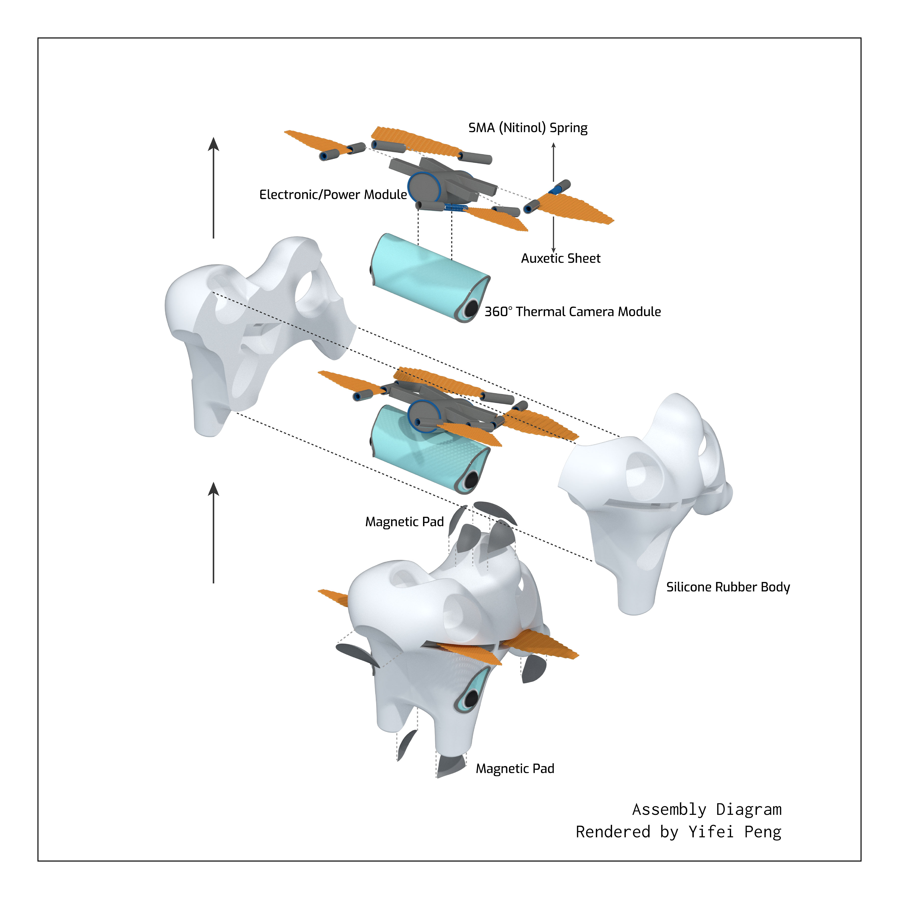
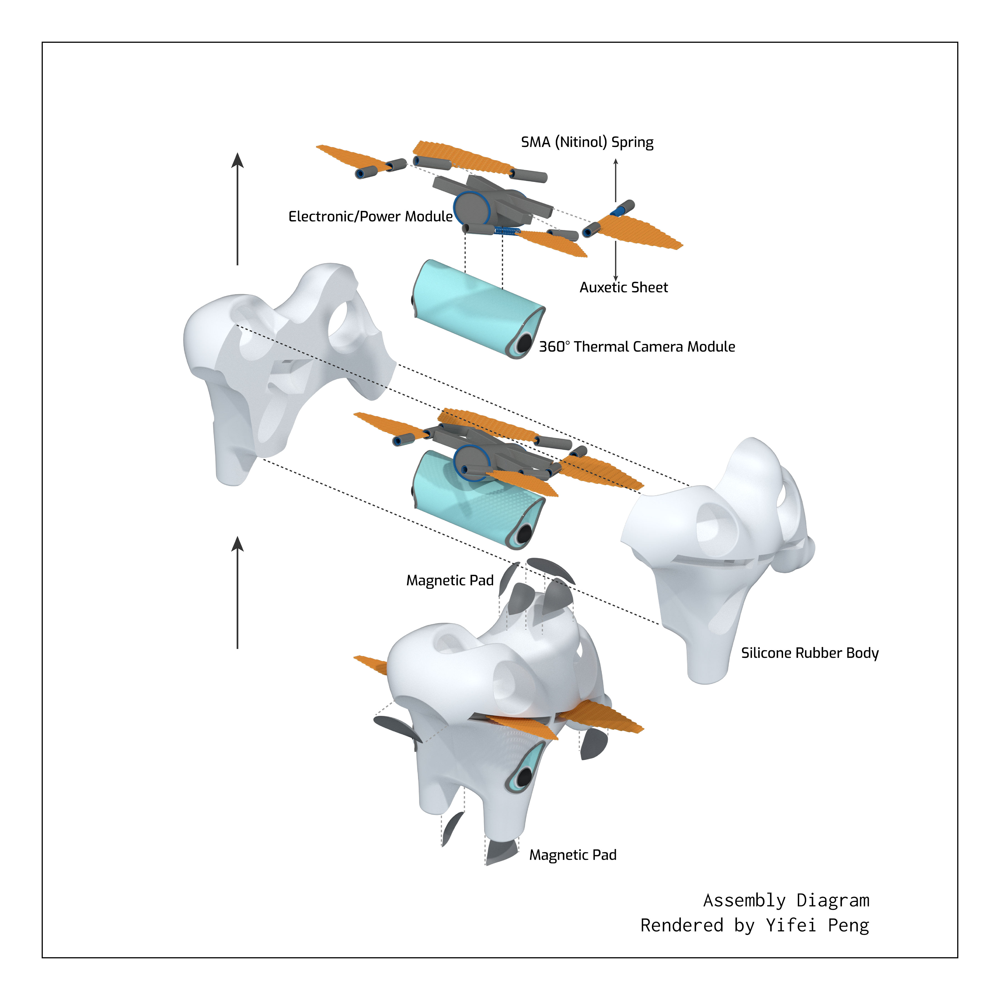
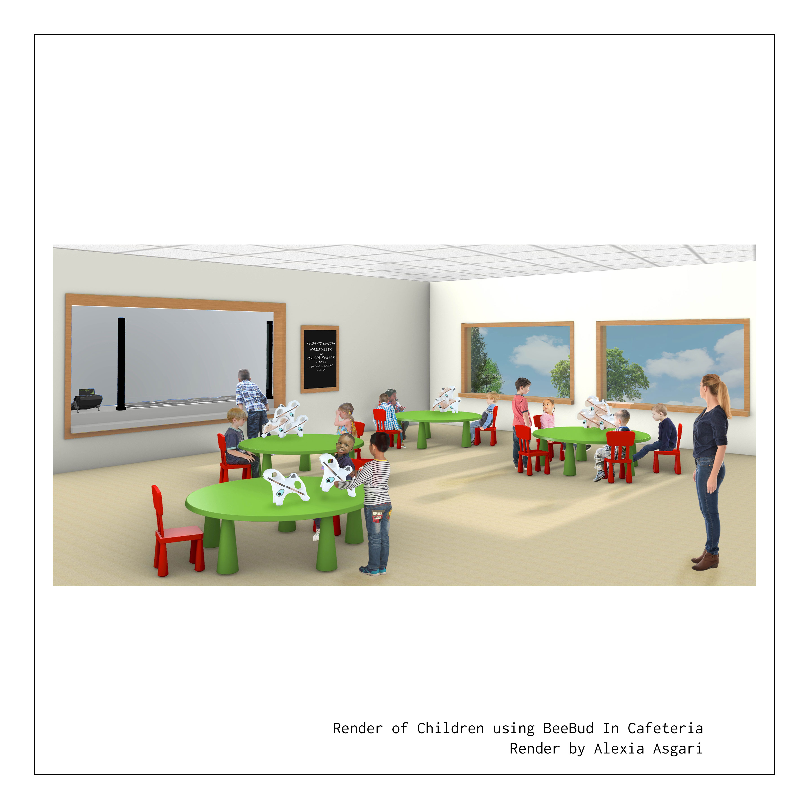
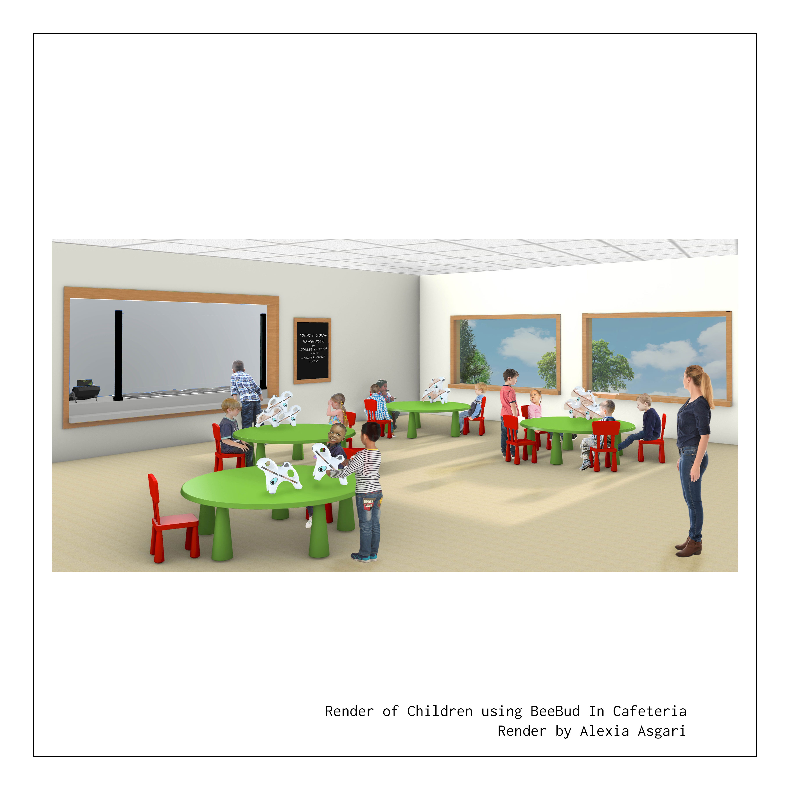

SmileSync
Fall 2020 | Professor Jenny Sabin | Created in partnership with Yifei Peng (MDC '22) and Mounica Allani (MBA '21)
As the pandemic brought about social distancing and mask wearing, my team sought to address a population that was particularly struggling with the disconnect in facial expression: Autistic children. After interviewing specialists, we worked to develop an interactive toy we called the BeeBud, which served as an emotional learning tool/ Through research we considered particular restrictions and preferences that were key to our user base.

 



 

Design
Our system works by capturing emotion through thermal data. We became particularly fascinated by emerging potentials of thermal data for emotion recording to address the needs of a community who struggled to express emotion at times verbally and facially. Finding accurate alternative methods of capturing intense emotion would help caregivers access situations prior to melt downs. In an alternative mode, the toy functions by flapping its wings as a method of encouragement. Each child has their individual toy, but when placed together, they work as a system. As quoted by an elementary school paraprofessional I had interviewed in the initial design process “Worst half hour of the day: recess. Lots of things can go wrong on the playground.” It was important for us to address both the users (autistic children) and caregivers surrounding them.